📘 BÀI 1
Môn Toán - Lớp 12
📘 BÀI TẬP ĐÚNG SAI
Question 1. Cho hàm số bậc ba $y = f(x)$ có đồ thị là đường cong trong hình dưới đây. 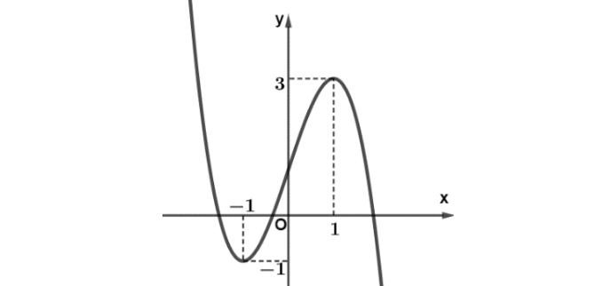
Question 2. Cho hàm số $y=f(x)$ liên tục trên $\mathbb{R}$ và có đạo hàm $f'(x)=(x+1)(x-3)x^2$.
Question 3. Cho hàm số $f(x)$ có bảng biến thiên như sau: 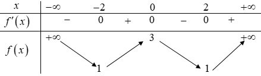
Question 4. Cho hàm số $y=f(x)$ có bảng biến thiên như sau 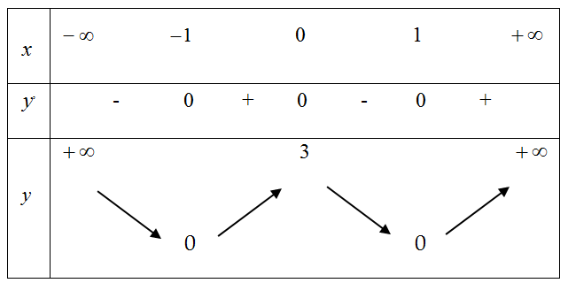
Question 5. Đồ thị hàm số $y=f(x)=x^3-3x$.
Question 6. Cho hàm số $y=f(x)$ xác định trên $\mathbb{R}$ và có bảng biến thiên như hình bên dưới. 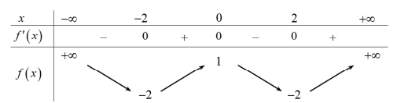 Các khẳng định sau đây đúng hay sai?
Question 7. Cho hàm số $y=f(x)$ xác định trên $\mathbb{R}$ và có đạo hàm $f'(x)$. Đồ thị của hàm số $f'(x)$ như hình dưới đây. 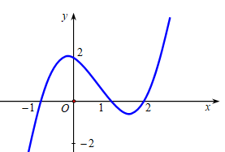 Các mệnh đề sau đúng hay sai?
Question 8. Cho hàm số $f(x) = \ln x, \forall x \in (0;+\infty)$. Các mệnh đề sau đúng hay sai?
Question 9. Cho hàm số $y=f(x) = \dfrac{-x^2+2x+2}{x+1}$. Các khẳng định sau đây đúng hay sai?
Question 10. Cho hàm số $y=f(x)$ có bảng biến thiên như hình vẽ. 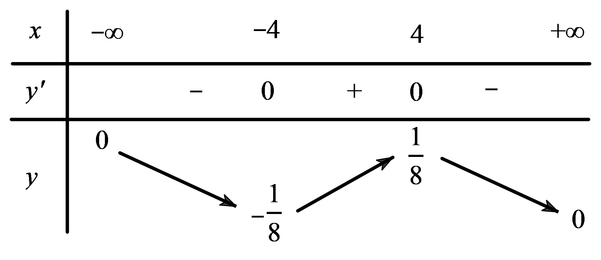 Các khẳng định sau đúng hay sai?
Question 11. Cho hàm số $y=f(x)$ có đồ thị như hình vẽ  Các khẳng định sau đúng hay sai?
Các khẳng định sau đúng hay sai?
Question 12. Đồ thị của đạo hàm bậc nhất $y=f'(x)$ của hàm số $f(x)$ được cho trong hình dưới đây. 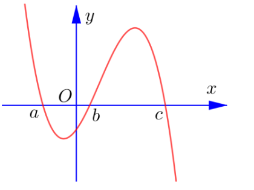 Trong mỗi ý ở câu sau, hãy chọn đúng hay sai.
Question 13. Cho hàm số bậc bốn $y=f(x)$. Hàm số $y=f'(x)$ có đồ thị như hình dưới đây
Question 14. Cho hàm số $y=f(x)=\dfrac{x^2+3x}{x-1}$.
Question 15. Cho hàm số $y=2^{x^2-3x+\frac{13}{4}}$.
Question 16. Cho hàm số $y=\log_2(x^2-4x+5)$ có đồ thị là (C).
Question 17. Cho hàm số $y = \dfrac{x-1}{x+m}$. Xét tính đúng sai của các mệnh đề sau
Question 18. Cho hàm số $y=f(x)$ có bảng biến thiên như sau:
Question 19. Cho hàm số bậc ba $y=f(x)$ có đồ thị là đường cong như hình vẽ sau
Question 20. Cho hàm số bậc bốn trùng phương $f(x)$ có bảng biến thiên như sau:
Question 21. Cho hàm số $y=f(x)$ có đạo hàm $f'(x)=(x+1)e^x$.
Question 22. Cho hàm số $y=2x^3-3(2m+1)x^2+6m(m+1)x+1$. Xét tính đúng sai của các mệnh đề sau
Question 23. Cho một tấm tôn hình chữ nhật có kích thước $80(cm) \times 50(cm)$, người ta cắt đi ở bốn góc của tấm tôn bốn hình vuông bằng nhau để khi gập lại được một chiếc hộp (không nắp). Gọi cạnh hình vuông được cắt đi là $x(cm)$. Xét tính đúng sai của các mệnh đề sau
Question 24. Cho hàm số $y=x^3-3mx^2+3(2m-1)x+5m-4$. Xét tính đúng sai của các mệnh đề sau
Question 25. Cho hàm số $y=f(x)$ có bảng biến thiên như sau: 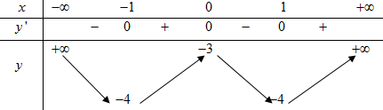 Xét tính đúng sai của các mệnh đề sau
Question 26. Cho hàm số $f(x)$ liên tục trên $\mathbb{R}$ và có bảng xét dấu của $f'(x)$ như sau:  Xét tính đúng sai của các mệnh đề sau
Xét tính đúng sai của các mệnh đề sau
Question 27. Cho hàm số bậc ba $y=f(x)$ có đồ thị như hình vẽ. 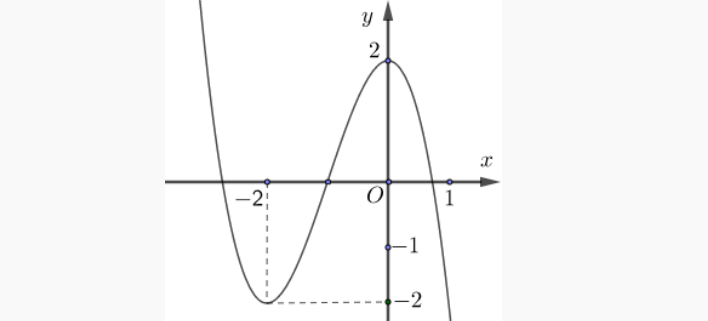 Xét tính đúng sai của các mệnh đề sau
Question 28. Cho hàm đa thức bậc năm $y=f(x)$ và đồ thị hàm số $y=f'(x)$ trên $\mathbb{R}$ như hình vẽ. 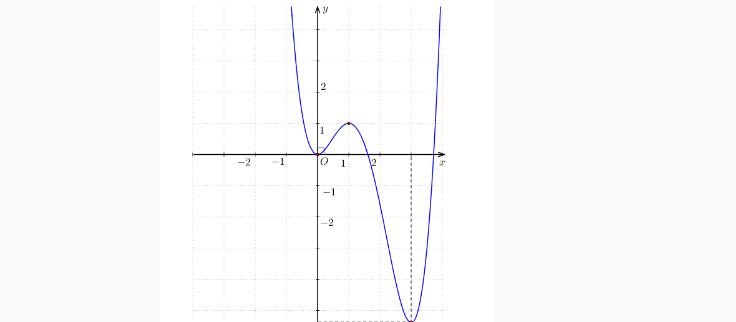 Xét tính đúng sai của các mệnh đề sau
Question 29. Cho hàm số $y=f(x)$ có bảng biến thiên như sau 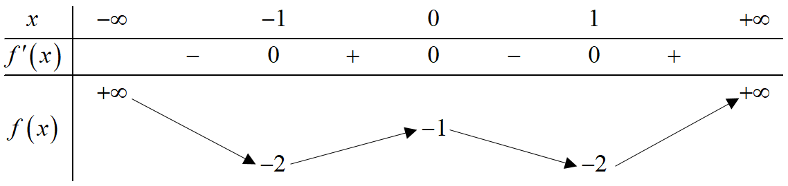 Xét tính đúng sai của các mệnh đề sau:
Question 30. Cho hàm số $f(x) = ax^3 + bx^2 + cx + d$ $(a,b,c,d \in \mathbb{R})$ có bảng biến thiên như sau 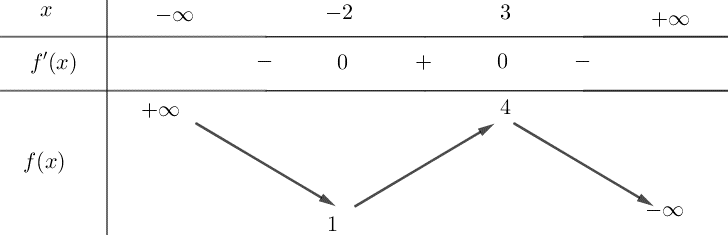
Question 31. Cho hàm số $y=f(x)=x^3-3mx^2+3(2m-1)x+1$, $m$ là tham số.
Question 32. Cho hàm số $y=f(x)=-\dfrac{1}{3}x^3+(m-1)x^2+(m-3)x+2$, trong đó $m$ là tham số. Xét tính đúng sai của các mệnh đề sau?
Question 33. Cho hàm số $y=\dfrac{1}{3}mx^3-(m-1)x^2+3(m-2)x+\dfrac{1}{3}$. Xét tính đúng sai của các mệnh đề sau?
Question 34. Cho hàm số $y=\dfrac{x+4}{x+m}$ với $m$ là tham số. Xét tính đúng, sai của các khẳng định sau:
Question 35. Cho hàm số $y=\dfrac{mx+3m-4}{x-m}$ với $m$ là tham số. Xét tính đúng, sai của các khẳng định sau:
Question 36. Cho hàm số $y=\dfrac{-x+1}{x+m}$ với $m$ là tham số, $x \ne -m$. Xét tính đúng, sai của các khẳng định sau:
Question 37. Cho hàm số $y=\dfrac{mx+4m}{x+m}$ với $m$ là tham số, $x \ne -m$. Xét tính đúng, sai của các khẳng định sau:
Question 38. Cho hàm số $y=\dfrac{(m+1)x^2-2mx+6m}{x-1}$, ($m$ là tham số). Các mệnh đề sau đúng hay sai?
Question 39. Cho hàm số $y=\dfrac{x^2-3x+2}{x+2}$ (C). Các mệnh đề sau đúng hay sai?
Question 40. Cho hàm số $y=\dfrac{x^2-x+1}{x}$ có đồ thị là (C).
Question 41. Cho hàm số $y=f(x)=\dfrac{x^2+x+2}{x-1}$ có đồ thị là (C).
Question 42. Cho hàm số $y=\dfrac{x^2+mx+m}{x+m}$. Xét tính đúng, sai của các khẳng định sau:
Question 43. Cho hàm số $y=\dfrac{x^2+mx-1}{x-1}$ xét tính đúng sai của các mệnh đề sau
Question 44. Cho hàm số $y=x^4-2mx^2+m$, với $m$ là tham số. Xét tính đúng, sai của các khẳng định sau:
Question 45. Cho hàm số $y=x^4-(m-1)x^2+m-2$, với $m$ là tham số. Xét tính đúng, sai của các khẳng định sau:
Question 46. Cho hàm số $y=f(x)$ có đạo hàm $f'(x)=(x^2-1)(x-4)$ với mọi $x \in \mathbb{R}$?
Question 47. Cho hàm số $y=f(x)$ có đạo hàm $f'(x)$ trên khoảng $(-\infty;+\infty)$. Biết đồ thị (C) của hàm số $y=f(x)$ như hình vẽ dưới đây. 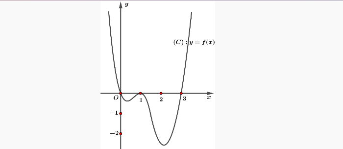
Question 48. Cho hàm số $y=f(x)$ có bảng biến thiên như hình vẽ bên. Xét tính đúng, sai của các khẳng định sau: 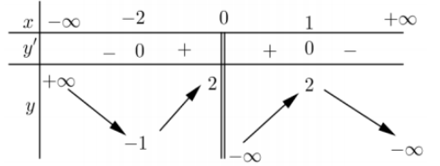
Question 49. Cho hàm số $y=f(x)$ có bảng biến thiên như sau 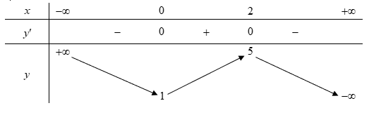
Question 50. Cho hàm số $y=|x+1|(x-2)$. Khi đó:
Question 51. Cho hàm số $y=f(x)$. Đồ thị hàm số $y=f'(x)$ như hình bên 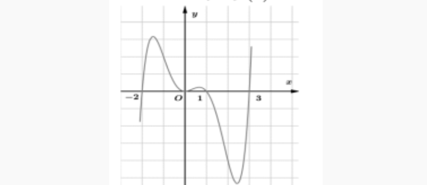 Khi đó:
Question 52. Cho hàm số bậc bốn $y=f(x)$ có đồ thị hàm số $y=f'(x)$ như hình vẽ bên. 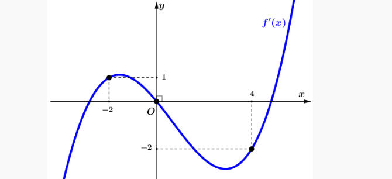 Xét tính đúng sai của các mệnh đề sau:
Question 53. Cho hàm số bậc ba $y=f(x)$ có đồ thị như hình vẽ. 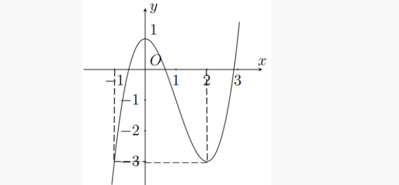 Xét tính đúng sai của các mệnh đề sau:
Question 54. Cho hàm số đa thức bậc bốn $y=f(x)$ thỏa mãn $f(0)=\dfrac{1}{2}$, hàm số $f'(x)$ có đồ thị như hình vẽ. 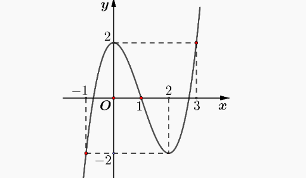 Xét tính đúng sai của các mệnh đề sau: